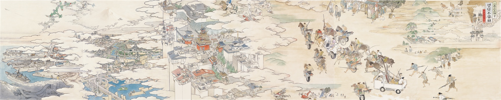

メインビジュアル:《奨堕不楽圖》 Sho-Da-Furaku (Show the Flag) 2003, 撮影：木奥恵三, ©YAMAGUCHI Akira, Courtesy Mizuma Art Gallery
2007年の第1回目から今年で10周年を迎えるカナザワ映画祭。
10回目にしてファイナルとなる今年は、エロ･グロ･ナンセンスから狂熱的ナショナリズム、社会不安、暴動騒乱、そして戦争。
映画を通して、時代を観る。
プログラム


■ 主催：かなざわ映画の会
■ 特別協力：金沢都ホテル
■ 協力：金沢フィルムコミッション、シネモンド、東京国立近代美術館フィルムセンター、横安江町商店街振興組合
■ 音響協力：樋口泰人（boid）
■ 映写音響装置オペレート：モノリス
■ 映画祭ロゴ/ポスターデザイン：檜垣紀六
■ メインビジュアル：山口晃
■ サイトデザイン：小林貴也（http://jgs.me）
■ 作品提供：boid、Crispin Glover、Hollywood classics、Park circus limited、REEL SUSPECTS、Tamasa distribution、石井岳龍、大島渚プロダクション、クロックワークス、国際放映、新日本映像、東映、東宝、東宝プロモーション、日活、「山谷」制作上映委員会、レスぺ、ロシア映画社、若松プロダクション
■ 字幕制作：秋元卓、伊藤めぐみ、大泉歩由、大澤武史、大野晃平、長夏実、上條葉月、小林貴也、坂元圭、鈴木智士、田中聖子、平澤真未
■ 後援：石川県興行生活衛生同業組合、北國新聞社、北陸朝日放送
■ 助成：芸術文化振興基金、金沢市
■ 協賛（50音順）: アンティーク フェルメール 、石引パブリック、岩本清商店、欧風食堂 ル マルス、Otaku Bar K3、オヨヨ書林シンタテマチ店、オヨヨ書林せせらぎ通り店、CAFE : MONOCHROME、Curio Espresso and Vintage Design、collabon、JO-HOUSE、旬菜焼はざま、shirasagi/白鷺美術、SKANDA、スペイン料理アロス、田中昭文堂印刷株式会社、野澤（美容院）、バーゴールデンフィッシュ、ひがし山とみ、ひげの店、ビストロユイガ、ひらみぱん、葡萄夜、magnolia KZ
■ かなざわ映画の会サポーター2016（入会順）: a.piedi.nudi、スペックス、ら～ふぇ～☆ぼ～いず、ビター・ダカラン、いしい たくろう、ksyuk、m465、高橋ナオヤ、イチロー＠道楽滝野店、コーノリョー、古泉智浩、ヒロタタカノリ、OREN ISHII、ここあ、ルシフ＆ヨシノ、沢木麻、田辺望、真睦&馳純、岩瀬慎治、ＧＡＫ、Xaka、だいこん、まてぃ～に、岡大智、masaki_13、覚本直政、ゲオのばかやろう、KKJ&AZ、石塚紘司、庵野ハルカ、ほさか、シノハラミキオ、ぴのきお、@shibaGari、ヴエダコウシ、渡辺智史、むらたまさのり、aro-chang、西野尾貞明、豊住美雪、カセット館後藤、ばっどていすとさんどいっち、大畑浩一、Quirksob a.k.a Django、齋藤結衣、雉雅威、Y.Iijima、平野吉光、前田顕毅、さわら、わか、roony、瀬島裕美子、芝田揚士、間合建介、赤目長耳、強靭カッター、あわなみ、かまーん、布やハサミ、向正一郎、ブロブAK-R、並河ちひろ、さかいしょうじ、まらひろ、怪傑ファラオ丸、MANN:ΣLL:ZΣΣ、岩崎宗市、岡村友史、岡村安希、高橋潤一、長野展子、山岸安洋、松田邦久、松田絵里沙、Masa.KA、shimo012000、Dack man、クニマサ、kazukiss、スナ、銀玉の狼、たまやん、matilda